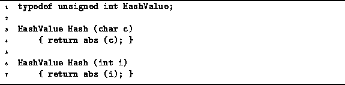

Data Structures and Algorithms
with Object-Oriented Design Patterns in C++
Data Structures and Algorithms
with Object-Oriented Design Patterns in C++Out of all the C++ built-in data types, the so-called integral types are the simplest to hash into integers. The integral data types are char and wchart, int of all sizes, and enumerations. Since the underlying representation of such data types can be viewed as an integer, the hash function f is trivial. The only wrinkle involves dealing with negative values. Thus, a suitable function f for an integral data type is the absolute value function:
Program  shows how to do this
for plain char and int data types.
Clearly, the running time of both of the functions defined
in Program is O(1).
shows how to do this
for plain char and int data types.
Clearly, the running time of both of the functions defined
in Program is O(1).

Program: Integral Hash Function Definitions
 Copyright © 1997 by Bruno R. Preiss, P.Eng. All rights reserved.
Copyright © 1997 by Bruno R. Preiss, P.Eng. All rights reserved.